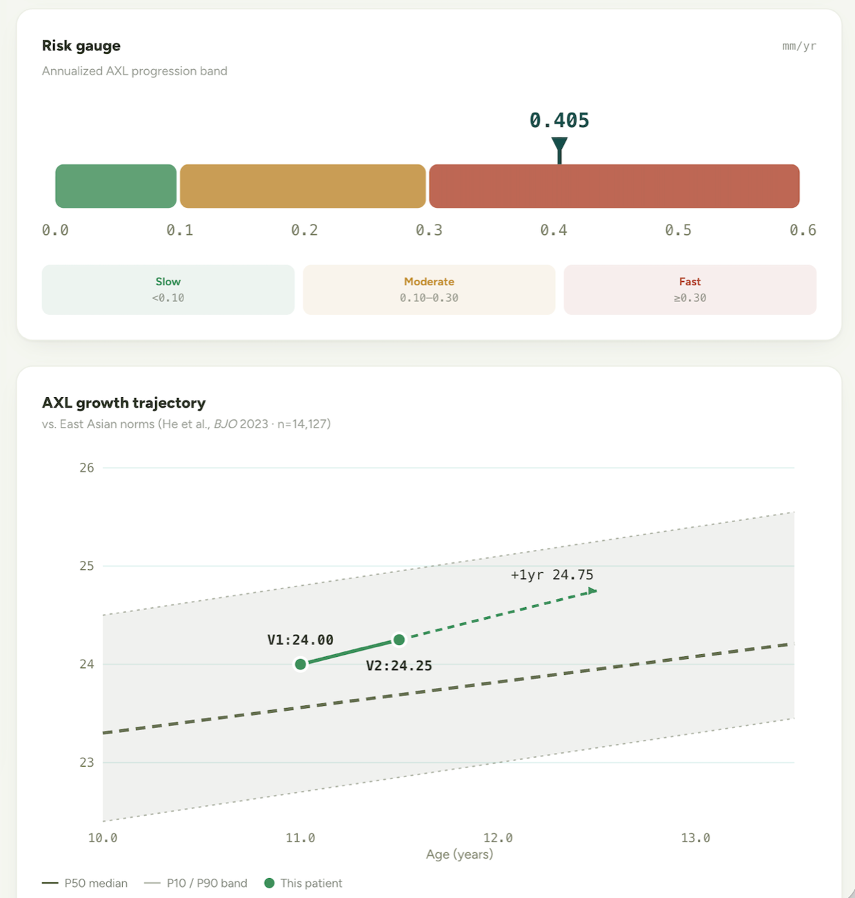

Projects

FocusFlow, A Pomodoro Clock
Focus timers usually reset when the browser sleeps and lock your history to one device. FocusFlow keeps the timer accurate in the background and syncs your sessions across the web app and browser extension.

Myopia Progression Decision-Support Tool
Knowing whether a child's short-sightedness will worsen usually takes years of follow-up. This tool gives clinicians an early, explainable prediction from just the first few months of data.
Vision-Language Model Fine-Tuning & Evaluation
AI models often write fluent but hallucinated image descriptions, with no easy way to measure how much to trust them. This project fine-tunes a faithful model plus an automated pipeline that scores AI-output quality.
Foresight — World-Event Forecast Tracker
Foresight follows proven analysts and mirrors their calls on real-world events like ceasefires, elections, and rate decisions, so you're always positioned on what they see coming.
Cloud Architecture & Serverless Pipeline
Spiky image workloads force a bad choice: pay for idle servers, or crash under bursts. This hybrid AWS design absorbs traffic spikes automatically, without paying for idle compute.
Distributed E-Commerce Microservices
When one service fails mid-order, customers get double-charged and stock oversells. This platform keeps every order correct and consistent even when individual services go down.